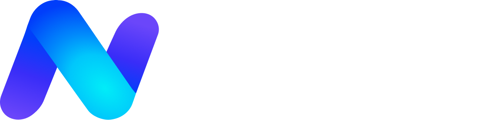
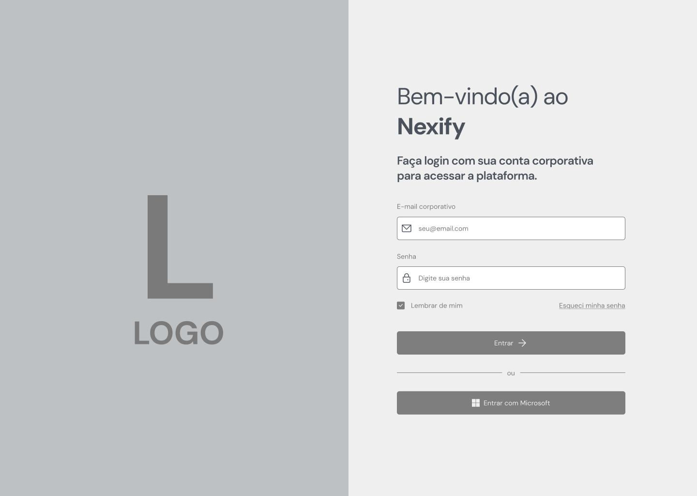
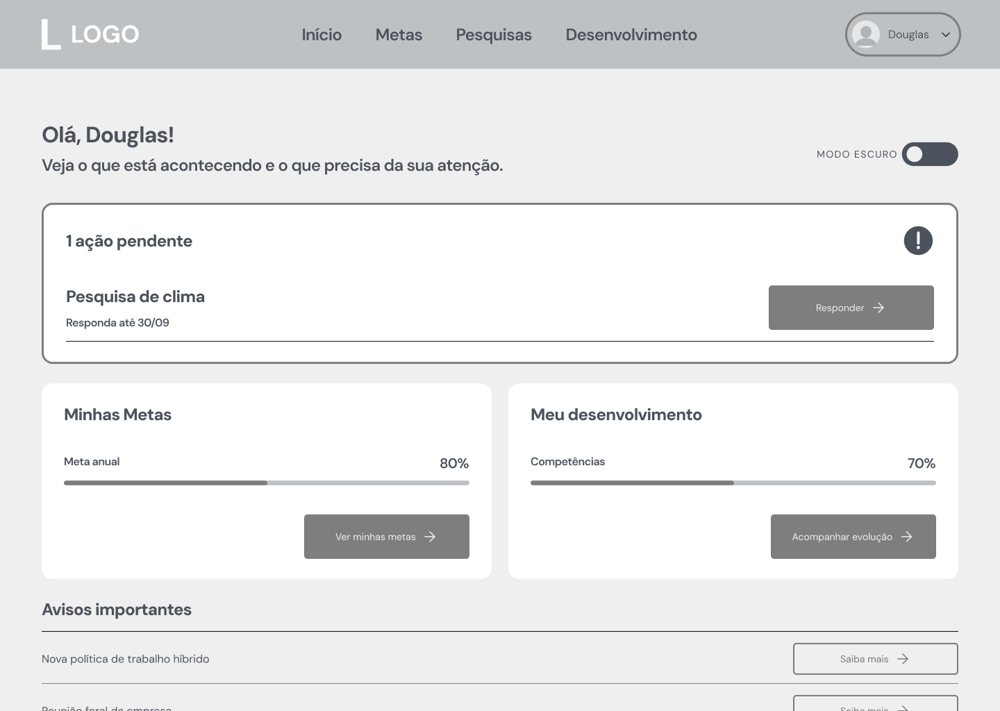
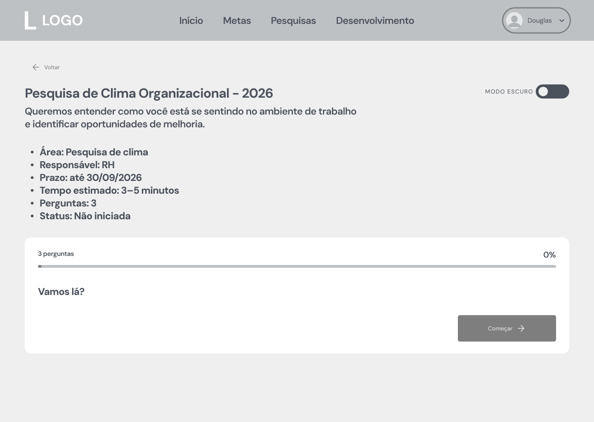
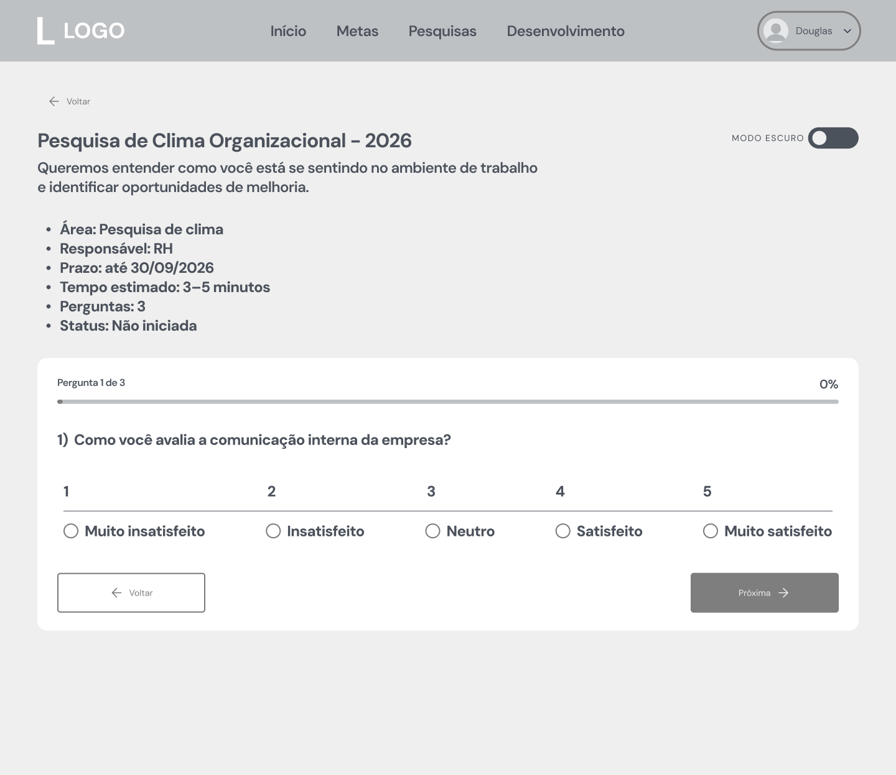
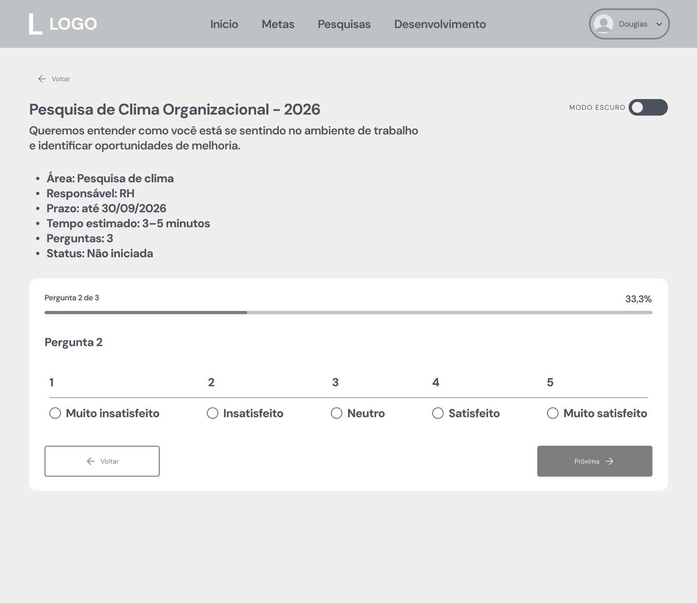
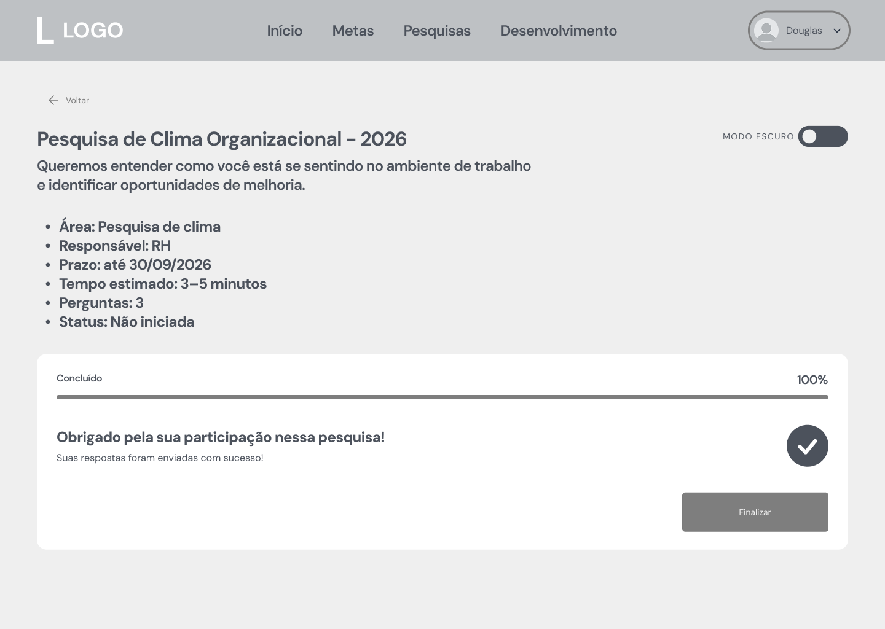
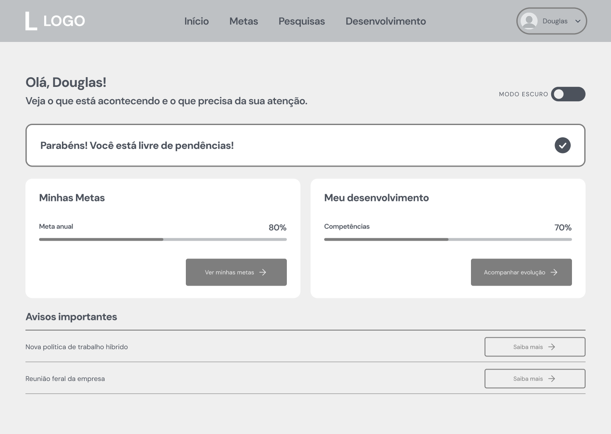
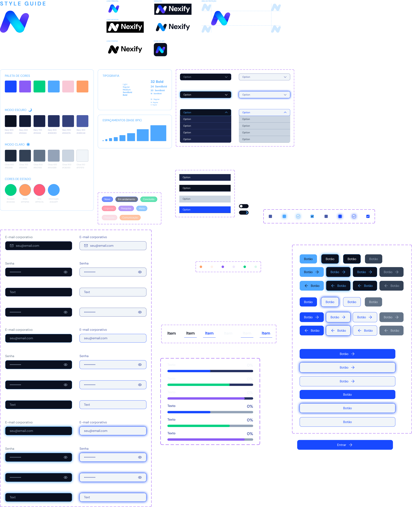

Experiência do colaborador · Estudo de caso fictício

Nexify
Clareza antes da complexidade.
O que preciso saber, fazer e acompanhar? Uma experiência para reunir comunicação, metas, pesquisas e desenvolvimento profissional.
Contexto e problema
A Nexify é uma organização fictícia que enfrenta dificuldades para comunicar informações importantes, acompanhar metas, facilitar a participação dos colaboradores em pesquisas e dar visibilidade ao desenvolvimento profissional.
O objetivo do produto é centralizar informações e ações relevantes para que cada pessoa compreenda suas prioridades, acompanhe seu progresso e participe das iniciativas da organização.
A proposta concentra a experiência em uma Home que ajuda a responder três perguntas: o que está acontecendo, o que precisa da minha atenção e como estou evoluindo.
Pesquisa exploratória e hipóteses
O ponto de partida foi a análise do problema, complementada por benchmarking de plataformas de experiência do colaborador e pela construção de uma persona hipotética. Essa base orientou a organização da informação e a definição do fluxo principal.
Informação com prioridade
A hipótese é que destacar pendências e prazos na Home ajuda a pessoa a identificar o que fazer primeiro.
Progresso compreensível
Indicadores visuais simples buscam tornar metas e desenvolvimento mais fáceis de acompanhar.
Essas hipóteses ainda precisam ser confrontadas com o uso. Esta etapa não representa validação com colaboradores reais; os testes de usabilidade estão previstos para as próximas iterações.
Benchmarking: referências e decisões
Microsoft Viva, 15Five, Teamflect e Lattice compõem as referências do estudo. A síntese do benchmarking orienta a proposta da Nexify sem reproduzir toda a amplitude dessas plataformas.
| Aprendizado | Aplicação na Nexify |
|---|---|
| Reduzir a troca de contexto | Centralizar avisos, pendências, metas, pesquisas e desenvolvimento em uma porta de entrada comum. |
| Escopo amplo aumenta a complexidade | Mostrar o essencial na Home e direcionar o aprofundamento para áreas específicas. |
| Muitos módulos aumentam a carga cognitiva | Organizar a navegação em torno das necessidades do colaborador, evitando uma coleção de módulos independentes. |
| Rotinas recorrentes devem ser rápidas | Dar acesso direto às pesquisas pendentes, com prazo e status visíveis. |
| Metas precisam ser compreensíveis | Apresentar progresso de maneira visual e simples, sem exigir a interpretação de estruturas complexas de OKR. |
| Integrações influenciam a experiência | Tratar integrações como oportunidade futura, sem depender de um ecossistema técnico específico no MVP. |
Persona hipotética
O colaborador da Nexify representa uma hipótese de público para orientar as decisões iniciais, e não uma persona validada por entrevistas.
Objetivos
- Saber o que acontece na organização.
- Acompanhar metas e desenvolvimento profissional.
- Participar das pesquisas.
Necessidades
- Informação priorizada.
- Acesso rápido às pendências.
- Feedback visual de progresso.
- Navegação simples.
Frustrações
- Excesso de informações e prioridades pouco claras.
- Perder prazos de pesquisas.
- Dificuldade para acompanhar a própria evolução.
Direção para a experiência
Dar visibilidade ao que exige ação e manter as informações de acompanhamento próximas, com caminhos claros para os detalhes.
Arquitetura e fluxo principal
A navegação dos wireframes se organiza em Início, Metas, Pesquisas e Desenvolvimento. A Home reúne ações pendentes, progresso e avisos importantes.
O fluxo detalhado acompanha uma pesquisa de clima: da descoberta da pendência à confirmação do envio e à atualização da Home.
- Login / SSO
- Home: visualizar ações pendentes
- Identificar a pesquisa e seu prazo
- Abrir e iniciar a pesquisa
- Responder às perguntas
- Revisar as respostas
- Enviar respostas
- Receber confirmação
- Voltar à Home com o status atualizado
Wireframes: da pendência à conclusão
As nove telas documentam a estrutura da experiência antes do acabamento visual. Selecione uma imagem para abri-la em tamanho original.

Entrada com e-mail corporativo e senha.

Visão inicial com ações pendentes e indicadores.

Contextualização antes das perguntas.

Primeira etapa do preenchimento.

Continuação das perguntas.
Última etapa antes da revisão.
Conferência das respostas antes do envio.

Confirmação de pesquisa respondida.

Retorno à Home sem a pendência concluída.
Guia de estilo e componentes
A identidade da Nexify combina azul, roxo e verde, com tipografia DM Sans. O guia contempla variações da marca, área de proteção e ícone do aplicativo, além de paletas para modos claro e escuro.

#1849FF
#8B5CF6
#00C182
#4EA8FF
#F9C8D6
#FF9F68
Tipografia e hierarquia
DM Sans com variações de peso para títulos, corpo e legendas. A escala do guia parte de títulos de 32 px e corpo de 16 px.
Espaçamento
Uma base de 8 px orienta a organização dos elementos, com intervalos menores para detalhes e maiores para separar blocos de conteúdo.
Componentes reutilizáveis
Campos de texto e senha, seletores, botões, abas, caixas de seleção, alternância de tema, etiquetas e barras de progresso compõem a biblioteca visual.
Estados de interface
O guia prevê variações de foco, seleção e desabilitação. Cores de sucesso, aviso, erro e informação apoiam o feedback ao longo do fluxo.
Os componentes têm versões claras e escuras. Contraste, legibilidade e uso por teclado são pontos a verificar nas próximas avaliações, sem pressupor conformidade de acessibilidade já comprovada.
Protótipo de alta fidelidade e versão responsiva
O protótipo navegável reúne a proposta visual e o fluxo de interação. O projeto também conta com uma versão responsiva, preparada para adaptar a experiência a diferentes tamanhos de tela.
Explore a versão desktop diretamente abaixo, com a tela ajustada ao espaço disponível. O estudo segue em evolução e pode receber ajustes conforme novos testes forem realizados.
Próximos passos e evolução
O resultado desta etapa é uma proposta de experiência documentada, com wireframes, guia de estilo e protótipo navegável. Ainda não há resultados de testes de usabilidade nem métricas de impacto em produção.
- Testar se as pessoas identificam a pesquisa pendente e compreendem seu prazo.
- Observar o preenchimento, a revisão e o envio das respostas.
- Verificar se a confirmação e a atualização da Home são percebidas.
- Avaliar a navegação e a legibilidade na versão responsiva.
- Revisar contraste, foco, estados de erro e consistência dos componentes.